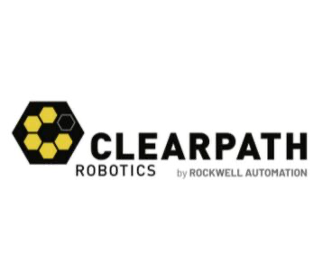
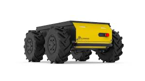

Subsidiary · Canada
Clearpath Robotics Company Profile
Mobile Robotics,Research Robotics,Autonomous Robotics
Clearpath Robotics facts
- Category
- Mobile Robotics,Research Robotics,Autonomous Robotics
- Primary focus
- Autonomous Robotics
- Segments
- Autonomous Robotics · Research Platforms
- Country
- Canada →
- Type
- Subsidiary
- Ticker
- ROK
- Website
- Official website →
- Focus
- ROS-native mobile robot platforms,Autonomous navigation,Unmanned ground vehicles,Research and development,Robotics education,Field robotics
Robologai signal
Clearpath Robotics is tracked for autonomous robotics deployment: mobile systems, field robots, delivery, inspection, logistics, or other real-world automation lanes. Tracked products include Clearpath Mobile Robotics Platform.
Strategic Positioning
Why Clearpath Robotics matters to the physical AI economy.
Autonomous RoboticsResearch Platforms
2 intelligence tags attached to this profile.
Company Snapshot
Core signals Robologai tracks for Clearpath Robotics.
Product Lineup
Tracked robots and products associated with Clearpath Robotics.

Autonomous Mobile Robot Platform
Clearpath Mobile Robotics Platform
Autonomous navigation, robotics research, industrial inspection, education, and field robotics
Contact for pricing
Robot profile →
Data Quality
Robot coverage, official sources, market type, and review status.
Source Notes
Clearpath Robotics source trail.
Market Signal
How Clearpath Robotics fits into the robotics economy.
Related Companies